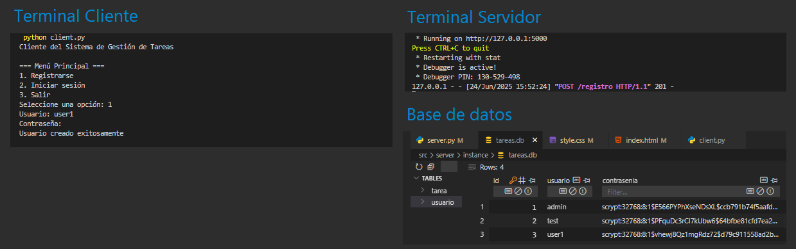
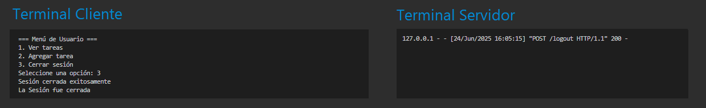
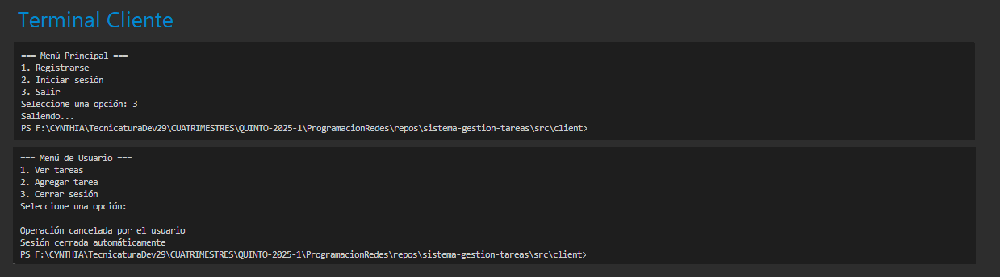

Documentación de la API
Sistema de Gestión de Tareas
Descripción General
Esta documentación detalla la API RESTful para el Sistema de Gestión de Tareas. El proyecto consiste en un backend en Flask que gestiona usuarios y tareas, y un cliente de consola en Python para interactuar con él. La autenticación se maneja de forma segura a través de sesiones con cookies, y los datos persisten en una base de datos SQLite.
Tecnologías Utilizadas
El proyecto se basa en un conjunto de tecnologías robustas y ampliamente utilizadas en el ecosistema de Python:
Puesta en Marcha
Sigue estos pasos para configurar y ejecutar el proyecto en tu entorno local.
1. Clona el repositorio
git clone https://github.com/cynthidev/sistema-gestion-tareas.git
cd sistema-gestion-tareas2. Configura y ejecuta el Servidor
Abre una terminal para el servidor:
# 1. Navega al directorio del servidor
cd src/server
# 2. Instala las dependencias (solo la primera vez)
pip install -r requirements.txt
# 3. Inicia el servidor Flask
# La API estará disponible en http://localhost:5000
python server.py3. Configura y ejecuta el Cliente
Abre una nueva terminal (deja la del servidor corriendo):
# 1. Navega al directorio del cliente (desde la raíz del proyecto)
cd src/client
# 2. Instala las dependencias (solo la primera vez)
pip install -r requirements.txt
# 3. Inicia el cliente interactivo
python client.pyPruebas y Demostración
A continuación se muestra el flujo de uso del cliente de consola. Para tus propias pruebas, reemplaza las imágenes de ejemplo en la carpeta docs/screenshots/.
1. Registro de un nuevo usuario
El primer paso es crear una cuenta en el sistema.
2. Inicio de sesión
Una vez registrado, el usuario puede iniciar sesión para obtener una sesión autenticada.
Se muetra log de depuración (a fines de evidencia) para confirmar que la sesión está activa

3. Crear y ver las tareas
Con una sesión activa (el usuario debe de estar logeado), puede solicitar y ver sus tareas personales.
Si el usuario no tiene tareas, puede crear una nueva tarea y luego consultarla.

4. Cerrar sessión
Con una sesión activa (el usuario debe de estar logeado), puede cerrar sesión. 
5. Salir
El usuario puede salir desde el menú principal. Si el usuario sale, y no cerró sesión la sesión se cierra automáticamente
Endpoints de la API
La siguiente tabla resume los endpoints disponibles. Haz clic en una fila para ver los detalles completos, incluyendo el formato de los datos y ejemplos de uso.
| Método y Ruta | Descripción Breve | Autenticación | Ver |
|---|---|---|---|
POST
/registro
|
Crea un nuevo usuario en el sistema. | No Requerida | |
POST
/login
|
Autentica a un usuario y crea una sesión. | No Requerida | |
GET
/tareas
|
Obtiene las tareas del usuario. | Requerida | |
POST
/tareas
|
Crea una nueva tarea para el usuario autenticado. | Requerida | |
POST
/logout
|
Cierra la sesión del usuario. | Requerida |
Conceptos Clave
¿Por qué es crucial hashear las contraseñas?
El hashing de contraseñas es una práctica de seguridad no negociable. En lugar de almacenar las contraseñas en texto plano, se transforman en una cadena de caracteres única e irreversible. Esto significa que si la base de datos se ve comprometida, los atacantes no pueden obtener las contraseñas originales de los usuarios. En este proyecto, usamos Werkzeug, que implementa `pbkdf2:sha256`, un algoritmo fuerte que incluye "salting" para proteger contra ataques comunes.
Las razones fundamentales para hashear contraseñas son:
- Protección de datos: Es la primera línea de defensa para proteger la información del usuario en caso de una brecha de seguridad.
- Irreversibilidad: A diferencia del cifrado, un buen hash no se puede "deshacer" para revelar la contraseña original.
- Cumplimiento de estándares: Es un requisito básico en la mayoría de las políticas de seguridad de datos.
- Mitigación de riesgos: Reduce el impacto si los usuarios reutilizan la misma contraseña en múltiples servicios.
- Ataques de Tablas Arcoíris (Rainbow Tables): Una "sal" (salt) es una cadena de caracteres aleatoria que se añade a cada contraseña antes de hashearla. Como cada usuario tiene una "sal" diferente, dos usuarios con la misma contraseña (ej: "123456") tendrán hashes completamente distintos. Esto hace inútiles las tablas precalculadas de hashes (rainbow tables), que son una forma común de ataque.
- Ataques de Diccionario: El "salting" y el uso de algoritmos lentos como pbkdf2 o bcrypt hacen que probar millones de contraseñas de un diccionario sea computacionalmente muy costoso y lento, desincentivando al atacante.
¿Cuáles son las ventajas de SQLite?
Para este proyecto, se eligió SQLite por su pragmatismo y eficiencia, ofreciendo un conjunto de ventajas clave para el desarrollo y despliegues a pequeña escala:
- Configuración Cero: No requiere un proceso de servidor de base de datos separado, lo que simplifica enormemente la instalación y el despliegue.
- Autocontenida: Toda la base de datos (tablas, índices y datos) reside en un único archivo en el disco, facilitando su portabilidad y copias de seguridad.
- Ligereza y Compatibilidad: Tiene requisitos mínimos de sistema y viene integrado en la librería estándar de Python, sin necesidad de instalar drivers adicionales.
- Rendimiento Adecuado: Es sorprendentemente rápido para la mayoría de las operaciones comunes en aplicaciones con tráfico bajo a moderado.
Estas características lo convierten en la opción ideal para prototipos, aplicaciones de escritorio o pequeños servicios web donde la complejidad de un sistema como PostgreSQL o MySQL no es necesaria.